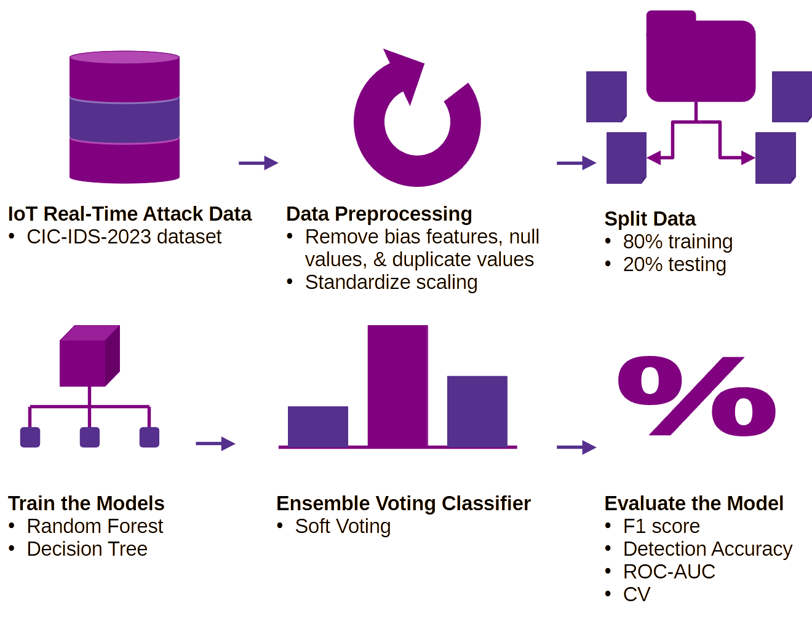

As part of my Spring 2025 Mentorship with Out in Tech, I created a Family Tree program in C++. This program goes beyond what other programs allow you to do in terms of depicting a diverse range of relationships such as children of divorce, children of different parents, and polyamory.
The tree is visualized using the GraphViz library. The tree is generated as a dot file, which can be converted to an svg for easy use.
The rapid growth of IoT devices has significantly increased the attack surface of modern networks, making them vulnerable to hijacking and malicious use. Traditional intrusion detection systems often struggle to detect subtle or zero-day anomalies due to their reliance on static signatures and high computational requirements.
This project proposes a Lightweight Ensemble Anomaly Detection Model designed specifically for IoT environments to efficiently identify hijacked devices in real time. By combining multiple machine learning classifiers, such as Random Forest and Decision Tree, in an ensemble structure, the model aims to improve detection accuracy while maintaining a low resource consumption suitable for IoT hardware. The system will be evaluated using publicly available IoT datasets and benchmarked against single-model baselines using metrics like ROC-AUC, F1, precision, accuracy and CV scores. This approach will seek to provide a more flexible and energy-efficient solution for mitigating IoT-based security threats.
What started as matcha reviews in my notes app so I could remember which places were good and which were terrible became a website where I post my matcha reviews for places across NYC and NJ.
This site is a constant WIP while I add features and review more matcha places.
Currently, I am working on giving visitors the ability to leave their own reviews under mine. I have already implemented this feature on localhost using MySQL & Apache, but am struggling to figure out how to make it live. Security has been at the forefront of my mind while developing this feature. By using prepared statements I can prevent XSS attacks and SQL injections.